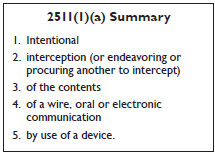
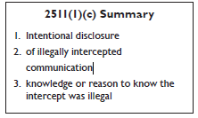

Chapter 2
Wiretap Act
Prosecutors usually encounter the Wiretap Act during criminal investigations, because it regulates the use of wiretaps to investigate crime. However, the Wiretap Act, also known as “Title III,” is both procedural and substantive. It prohibits not just law enforcement, but “any person,” from making an illegal interception or disclosing or using illegally intercepted material. 18 U.S.C. § 2511(1). The Wiretap Act was used, for example, to prosecute the Watergate burglars. See United States v. Liddy, 509 F.2d 428 (D.C. Cir. 1974). It became a useful computer crime statute in 1986, when Congress amended it to explicitly cover “electronic communications”—a broad term that includes computer network communications. See Brown v. Waddell, 50 F.3d 285, 289 (4th Cir. 1995) (“The principal purpose of the 1986 amendments to Title III was to extend to ‘electronic communications’ the same protections against unauthorized interceptions that Title III had been providing for ‘oral’ and ‘wire’ communications via common carrier transmissions.”).
Prosecutors should consider whether the Wiretap Act applies whenever a case involves spyware users and manufacturers, intruders using packet sniffers, persons improperly cloning email accounts, or any other surreptitious collection of communications from a victim’s computer.
The Wiretap Act is a complex subject and this chapter is not comprehensive.10 This chapter focuses on three of its prohibitions, each addressed below: the interception of communications, 18 U.S.C. § 2511(1)(a) & (b); the disclosure of intercepted communications, 18 U.S.C. § 2511(1)(c) & (e); and the use of intercepted communications, 18 U.S.C. § 2511(1)(d). These prohibitions are all subject to a number of exceptions, most of them detailed in section 2511(2). This chapter discusses the most relevant of those exceptions.
For draft jury instructions and charging language, please see Appendix B.
A. Intercepting a Communication: 18 U.S.C. § 2511(1)(a)

The core prohibition of the Wiretap Act is found at section 2511(1)(a), which prohibits “any person” from intentionally intercepting, or attempting to intercept, any wire, oral, or electronic communication.
Title 18, United States Code, Section 2511(1)(a) provides:
Except as otherwise specifically provided in this chapter any person who—
(a) intentionally intercepts, endeavors to intercept, or procures any other person to intercept or endeavor to intercept, any wire, oral, or electronic communication
. . . shall be punished as provided in subsection (4).
The First Circuit recently provided a comprehensive statement of the elements of a section 2511(1)(a) offense in a civil case. In re Pharmatrak, Inc. Privacy Litigation, 329 F.3d 9, 18 (1st Cir. 2003). Those elements are listed in the box above and are discussed below. Section 2511(1)(a)’s text describes only three elements: (1) intentionally, (2) intercepts, and (3) communication. However, embedded in the definitions are additional requirements that indictments and jury instructions also frequently include: specifically, the requirements that an interception be done with a “device,” and that it be done contemporaneously with transmission.
1. Intentional
In a civil Wiretap Act case, the Fourth Circuit approved of the following familiar jury instruction defining “intentional.”
An act is done intentionally if it is done knowingly or purposefully. That is, an act is intentional if it is the conscious objective of the person to do the act or cause the result. An act is not intentional if it is the product of inadvertence or mistake. However, the defendant’s motive is not relevant and the defendant needs not to have intended the precise results of its conduct or have known its conduct violated the law.
Abraham v. County of Greenville, 237 F.3d 386, 391 (4th Cir. 2001); see also United States v. Townsend, 987 F.2d 927, 930 (2d Cir. 1993) (setting forth similar model jury charge for mental state in a Wiretap Act prosecution).
Defendants sometimes argue that they lacked the required mental state because they believed that their interception was lawful. However, one can be guilty of intentionally intercepting a communication even if one incorrectly believed the interception was lawful. In 1986, as part of the Electronic Communications Privacy Act, Congress changed the mental state in section 2511 from “willfully” to “intentionally.” See S. Rep. No. 99-541, at 23 (1986), reprinted in 1986 U.S.C.C.A.N. 3555, 3577; United States v. Townsend, 987 F.2d 927, 930 (2d Cir. 1993). Before the change, some courts had held that the old “willfully” standard meant that the jury could consider “evidence that the accused acted or failed to act because of ignorance of the law” as ignorance of the law was relevant to “whether or not the accused acted or failed to act with specific intent.” United States v. Schilleci, 545 F.2d 519, 523-24 (5th Cir. 1977). The Senate Report made clear that “[t]he intentional state of mind is applicable only to conduct and results.” S. Rep. No. 99-541, at 23.
Tus, a mistake of law is not a defense to a Wiretap Act charge; a defendant must have intended to intercept a covered communication, but he or she need not have specifically intended to violate a legal duty not to intercept. See Peavy v. WFAA-TV, Inc., 221 F.3d 158, 178-79 (5th Cir. 2000); Reynolds v. Spears, 93 F.3d 428, 435-36 (8th Cir. 1996) (holding that reliance on incorrect advice from law enforcement officer is not a defense); Williams v. Poulos, 11 F.3d 271, 285 (1st Cir. 1993) (rejecting a good faith defense where defendant mistakenly believed his use and disclosure was authorized by the statute); Tompson v. Dulaney, 970 F.2d 744, 749 (10th Cir. 1992) (noting that a “defendant may be presumed to know the law”); Heggy v. Heggy, 944 F.2d 1537, 1541-42 (10th Cir. 1991) (rejecting a “good faith” defense based upon a mistake of law); Narducci v. Village of Bellwood, 444 F. Supp. 2d 924, 935 (N.D. Ill. 2006) (intent requirement “does not, however, require any intent to violate the law, or even any knowledge that the interception would be illegal”).
Similarly, “[t]he term ‘intentional’ is not meant to connote the existence of a motive.” S. Rep. No. 99-541, at 24. Defendants might be able to argue that their purposes in illegally intercepting communications were noble because their interceptions were part of personal investigations into crime or malfeasance. Such purposes are irrelevant to mental state. See Gelbard v. United States, 408 U.S. 41, 50 (1972) (“Virtually all concede that the use of wiretapping or electronic surveillance techniques by private unauthorized hands has little justification where communications are intercepted without the consent of one of the participants.”); Townsend, 987 F.2d at 931 (“whether the defendant had a good or evil purpose in utilizing the automatic recording equipment is, therefore, irrelevant”); S. Rep. No. 99-541, at 24 (“[P]eople who steal because they like to or to get more money or to feed the poor, like Robin Hood, all commit the same crime. . . . The word ‘intentional’ describes the mental attitude associated with an act that is being done on purpose. It does not suggest that the act was committed for a particular evil purpose.”).
2. Interception
The Wiretap Act defines an “intercept” as “the aural or other acquisition of the contents of any wire, electronic, or oral communication through the use of any electronic, mechanical, or other device.” 18 U.S.C. § 2510(4). Although only twenty-five words long, this definition is surprisingly complex. It uses no fewer than five terms that are each themselves separately defined in section 2510—“contents,” “wire communication,” “electronic communication,” “oral communication,” and “electronic, mechanical, or other device.” See 18 U.S.C. § 2510(8), (1), (12), (2) & (5). These concepts are each sufficiently complex that they are discussed in their own sections below. Additionally, a majority of courts have read into the definition of “intercept” a requirement that does not appear in the text of the statute—that the “acquisition” of the communication be “contemporaneous” with the transmission of the communication.
The “aural or other acquisition” of the contents of a communication refers to some “activity engaged in at the time of the . . . communication which causes such communication to be overheard by uninvited listeners.” United States v. Turk, 526 F.2d 654, 658 (5th Cir. 1976). Typically, this activity involves a “tampering with the established means of communication.” United States v. Campagnuolo, 592 F.2d 852, 862 (5th Cir. 1979), quoting United States v. Pasha, 332 F.2d 193, 198 (7th Cir. 1964). A defendant intercepts a communication upon acquisition; it is not necessary for the defendant to also listen to or read the communication. See Sanders v. Robert Bosch Corp., 38 F.3d 736, 740 (4th Cir. 1994) (“recording of a telephone conversation alone constitutes an ‘aural . . . acquisition’ of that conversation”); Walden v. City of Providence, 495 F. Supp. 2d 245, 262 (D.R.I. 2007) (citing cases).
The Turk court considered the argument that police officers who found a cassette tape recording made by a criminal defendant of his own conversations were “intercepting” the recorded conversation each time they chose to play the cassette tape. The court rejected the argument, holding that “an ‘interception’ requires, at the least, involvement in the initial use of the device contemporaneous with the communication to transmit or preserve the communication.” Turk, 526 F.2d at 658 n.3.
Just as the cassette tape in Turk held a recording of a telephone conversation, computers can hold recordings of electronic communications. Unlike the telephone conversations that the Wiretap Act initially protected, electronic communications usually take the form of text. The computer systems that process email, text messages, instant messages, and other forms of written electronic communication record and save a full copy of the contents of the communication. This is usually inherent in the design of the system: “all messages are recorded and stored not because anyone is ‘tapping’ the system, but simply because that’s how the system works.” Bohach v. City of Reno, 932 F. Supp. 1232, 1234 (D. Nev. 1996). Merely obtaining a copy of a recorded communication—a year-old email on a mail server, for example—is not necessarily an “intercept[ion]” of the communication under the Wiretap Act.
Applying Turk, most courts have held that both wire and electronic communications are “intercepted” within the meaning of Title III only when such communications are acquired contemporaneously with their transmission. An individual who obtains access to a stored copy of the communication left behind after the communication reached its destination does not “intercept” the communication. See, e.g., Steve Jackson Games, Inc. v. United States Secret Service, 36 F.3d 457, 460-63 (5th Cir. 1994) (access to stored email communications); Fraser v. Nationwide Mut. Ins. Co., 352 F.3d 107, 113-14 (3d Cir. 2003) (same); Konop v. Hawaiian Airlines, Inc., 302 F.3d 868, 87679 (9th Cir. 2002) (website); United States v. Steiger, 318 F.3d 1039, 1047-50 (11th Cir. 2003) (files stored on hard drive); United States v. Mercado-Nava, 486 F. Supp. 2d 1271, 1279 (D. Kan. 2007) (numbers stored in cell phone); United States v. Jones, 451 F. Supp. 2d 71, 75 (D.D.C. 2006) (text messages); United States v. Reyes, 922 F. Supp. 818, 836-37 (S.D.N.Y. 1996) (pager communications); Bohach, 932 F. Supp. at 1235-36 (same).
However, the First Circuit has suggested that the contemporaneity requirement, which was developed during the era of telephone wiretaps, “may not be apt to address issues involving the application of the Wiretap Act to electronic communications.” United States v. Councilman, 418 F.3d 67, 79-80 (1st Cir. 2005) (en banc) (citing In re Pharmatrak, Inc. Privacy Litigation, 329 F.3d 9, 21 (1st Cir. 2003)); see also Potter v. Havlicek, 2007 WL 539534, at *6-7 (S.D. Ohio Feb. 14, 2007) (finding “substantial likelihood” that the Sixth Circuit will find the contemporaneity requirement does not apply to electronic communications).
In United States v. Szymuszkiewicz, --- F.3d ----, 2010 WL 3503506 (7th Cir. 2010), the Seventh Circuit stated that “[t]here is no timing requirement in the Wiretap Act, and judges ought not add to statutory definitions.” Id. at *4. It stated that acquisition of a stored voice message would fall within the definition of “interception,” and that “[u]nder the statute, any acquisition of information using a device is an interception.” Id. Szymuszkiewicz was a prosecution for a violation of the Wiretap Act through the interception of e-mail. The court found that the evidence in that case established that the defendant intercepted e-mail contemporaneous with transmission. Consequently, despite Szymuszkiewicz, prosecutors are advised to charge Wiretap Act violations only when the contemporaneity requirement is present.
Courts have generally not delved into the meaning of “contemporaneous.” Exactly how close in time an acquisition must be to a transmission remains an open question. It is clear that “contemporaneous” cannot mean “simultaneous.” It is difficult to imagine that Congress would differentiate its protection of communications by the nanosecond, protecting them as they travel as electrical or optical impulses along a cable but then immediately ceasing protection the moment they are recorded in any fashion. However, the Eleventh Circuit suggested in dicta that “contemporaneous” must equate with a communication “in fight.” Steiger, 318 F.3d at 1050. By contrast, the First Circuit held the contemporaneity requirement could be read simply to exclude acquisitions “made a substantial amount of time after material was put into electronic storage.” In re Pharmatrak, Inc. Privacy Litigation, 329 F.3d 9, 21 (1st Cir. 2003).
This question arises especially often in some email wiretap cases. Email can easily be captured at the mail server; someone with the ability to configure the mail server can cause it to save copies of mail associated with a certain account. For example, in United States v. Councilman, 373 F.3d 197 (1st Cir.), reversed on rehearing en banc, 418 F.3d 67 (1st Cir. 2005), the indictment alleged that before email messages were ultimately delivered to customers, the defendant’s software program made copies of the messages from the servers that were set up to deliver the messages. The indictment charged this as a Wiretap Act violation. Two of the three judges held that email messages acquired from a computer’s random access memory or hard disk were not intercepted “contemporaneously” with transmission. On rehearing en banc, the First Circuit reversed the panel decision, holding that email in “electronic storage”—a statutory term meaning “temporary, intermediate storage,” see 18 U.S.C. § 2510(17)—can be intercepted under the Wiretap Act. See United States v. Councilman, 418 F.3d 67 (1st Cir. 2005) (en banc).
In practice, prosecutors should assume that the “contemporaneous” element applies. When a defendant has interfered with the way that a computer system processes incoming or outgoing messages, causing copies to be stored or forwarded to him at approximately the same time that the computer handled them, then it is safe to argue that the contemporaneity element has been satisfied. If a Councilman-type argument appears to apply to a prosecution, prosecutors are encouraged to contact CCIPS at (202) 514-1026. However, if a defendant appears to have simply accessed a computer system and obtained previously stored copies of a message, then the defendant might not have violated the Wiretap Act. Instead, prosecutors should consider charging 18 U.S.C. § 1030(a)(2), which prohibits accessing a protected computer and obtaining information, or the lesser-used 18 U.S.C. § 2701, which prohibits access to certain communications residing on the computers of an electronic communication service provider.
3. Contents of a Communication
To be an interception, the acquisition must be of the contents of the communication. 18 U.S.C. § 2510(4). “‘[C]ontents’, when used with respect to any wire, oral, or electronic communication, includes any information concerning the substance, purport, or meaning of that communication.” 18 U.S.C. § 2510(8). Congress amended the statute in 1986 “to exclude from the definition of the term ‘contents,’ the identity of the parties or the existence of the communication.” S. Rep. No. 99-541, at 13 (1986). Tus, merely learning the fact that a communication is occurring, or being able to tell who is communicating, is not an interception of the communication. Obtaining this non- “content” information about a communication might, however, be a misdemeanor violation of the prohibition on pen registers and trap and trace devices. See 18 U.S.C. § 3121(d).
Some types of information concerning network communications, such as full-path URLs, may raise arguments about whether they contain content. We encourage prosecutors who have questions about whether a particular type of information constitutes “contents” under the Wiretap Act to contact CCIPS for assistance at (202) 514-1026.
4. Wire, Oral, or Electronic Communication
The Wiretap Act prohibits the interception of “any wire, oral, or electronic communication.” 18 U.S.C. § 2511(1)(a). Those are three different classifications of communication, each with a statutory definition. “Wire” communications roughly correspond to traditional telephone conversations: those that contain the human voice, transmitted through wires or a similar communication system. See 18 U.S.C. § 2510(1), (18). “Oral” communications are vocal communications spoken by persons in private. See 18 U.S.C. § 2510(2); Doe v. Smith, 429 F.3d 706, 709 (7th Cir. 2005) (prohibition on interception of “oral communications” includes sound track of a video recording). “Electronic” communications are most every other type of communication sent using the electronic spectrum, including computer network communications that do not contain the human voice. See 18 U.S.C. § 2510(12); S. Rep. 99-541, at 14 (“As a general rule, a communication is an electronic communication protected by the federal wiretap law if it is not carried by sound waves and cannot fairly be characterized as containing the human voice.”).
The definitions of “wire communication” and “electronic communication” both require that the “communication” be sent using a facility or system that affects interstate or foreign commerce. See 18 U.S.C. § 2510(1), (12). Although this does not require that the communication actually travel interstate, it does exclude some purely local communications. For example, “an internal communication device that physically resembles a telephone handset,” used to allow prisoners to communicate with visitors, did not qualify because it was “not connected to any facility capable of transmitting interstate or foreign communications.” United States v. Peoples, 250 F.3d 630, 636 (8th Cir. 2001). The Internet easily meets the definition of a facility or system that affects interstate or foreign commerce. See United States v. Sutclife, 505 F.3d 944, 952-53 (9th Cir. 2007) (“As both the means to engage in commerce and the method by which transactions occur, ‘the Internet is an instrumentality and channel of interstate commerce.’”).
In at least one circuit, failure to establish the interstate aspect of the facilities (and a lack of judicial notice thereof) led to acquittal in a Title III prosecution. See United States v. Jones, 580 F.2d 219 (6th Cir. 1978). In response, the Fifth Circuit has held that the trivial proof of a telephone number’s area code suffices to establish the interstate nexus. See United States v. Lentz, 624 F.2d 1280, 1285-86 (5th Cir. 1980); see also United States v. Burroughs, 564 F.2d 1111, 1115 (4th Cir. 1977) (as to § 2511(1)(a), “[t]he essential element is that some basis for federal jurisdiction be established at trial”).
Defendants sometimes attempt to argue that the communication they intercepted did not meet this interstate commerce requirement because the particular leg of the communication that they intercepted was intrastate. For instance, a defendant has claimed that his device that acquired transfers between a keyboard and a computer did not acquire any electronic communications. United States v. Ropp, 347 F. Supp. 2d 831 (C.D. Cal. 2004). In Ropp, the defendant placed a piece of hardware between the victim’s computer and her keyboard that recorded the signals transmitted between the two. Id. The court dismissed the indictment charging a violation of section 2511 because it found that the communications that the defendant acquired were not “electronic communications” within the meaning of the statute. Id. The court concluded that “the communications in question involved preparation of emails and other communications, but were not themselves emails or any other communication at the time of the interception.” Id. at 835 n.1. Because the court found that the typing was a communication “with [the victim’s] own computer,” it reasoned that “[a]t the time of interception, [the communications] no more affected interstate commerce than a letter, placed in a stamped envelope, that has not yet been mailed.” Id.
Notwithstanding the Ropp decision, prosecutors should pursue cases involving interceptions occurring on computers or internal networks that affect interstate commerce. For example, if an individual installs malicious software on the victim’s computer that makes a surreptitious copy every time an email is sent, or captures such messages as they move on the local area network on their way to their ultimate destination halfway around the world, such cases can be prosecuted under section 2511.
The text of section 2511 and the statute’s legislative history support this interpretation. A transfer should include all transmission of the communication from the originator to the recipient. The plain text of the definition of “electronic communication” is incompatible with a more piecemeal approach. The definition explicitly contemplates that a “transfer” may be transmitted by a system “in whole or in part.” If “transfer” were meant to refer to each relay between components on a communication’s journey from originator to recipient, no system could be said to transmit a transfer “in part.”
In addition, the legislative history of the 1986 amendments that added the term “electronic communication” provides some useful explanation. The House Report explicitly states that “[t]o the extent that electronic and wire communications passing through [customer equipment] affect interstate commerce, the Committee intends that those communications be protected under section 2511.” H.R. Rep. No. 99-647, at 33. Similarly, the Senate Report discusses the inclusion of communications on private networks and intracompany communications systems. See S. Rep. No. 99-541, at 12, reprinted in 1968 U.S.C.C.A.N. 3555, 3566. In these discussions, Congress explicitly rejected the premise that acquiring a communication on the customer’s own equipment would take it out of the protections of the Wiretap Act.
5. Use of a Device
Under the Wiretap Act, an “interception” must occur by means of an “[e]lectronic, mechanical or other device.” 18 U.S.C. § 2510(4). Generally, “‘electronic, mechanical or other device’ means any device or apparatus which can be used to intercept a wire, oral, or electronic communication,” subject to two exceptions discussed below. 18 U.S.C. § 2510(5). Even though the “device” language is not contained in section 2511(1)(a) itself, but in the definition of “interception,” some courts have treated it as an independent element of a section 2511(1)(a) violation. See, e.g., United States v. Duncan, 598 F.2d 839, 847 (4th Cir. 1979); United States v. Harpel, 493 F.2d 346, 351 (10th Cir. 1974).
Congress included the “device” requirement in the statute in order to eliminate from its scope the plain, unaided use of natural human senses to obtain the contents of a communication. Because the Act protects not only wire and electronic communications, but also “oral” communications—a communication “uttered by a person” with a reasonable expectation of privacy, 18 U.S.C. § 2510(2)—Congress sought to define “intercept” in a way that would not criminalize simply overhearing a private conversation. When wire or electronic communications are intercepted, the use of a “device” is implicit; there is simply no way to obtain the contents of a radio transmission without using a radio, or to obtain the contents of a computer network transmission without a computer. In a typical network crime, the “device” is a computer used to intercept the communication or a software program running on a computer. Each satisfies the statutory requirements. See 18 U.S.C. § 2510(5); cf. MetroGoldwyn-Mayer Studios Inc. v. Grokster, Ltd., 545 U.S. 913, 940 (2005) (in a copyright inducement civil case, referring to software as a “device”).
In its definition of “device,” the statute excludes three categories from its scope. See Adams v. City of Battle Creek, 250 F.3d 980, 983 (6th Cir. 2001) (interpreting “other than” in definition to mean “excluding”). The statute eliminates “a hearing aid or similar device being used to correct subnormal hearing to not better than normal.” 18 U.S.C. § 2510(5)(b). This exception furthers Congress’ goal of not criminalizing the use of the human ear.
Additionally, the statute creates two “in-the-ordinary-course-of-business” exceptions to wiretap liability in section 2510(5)(a).
“Extension Telephone” Exception
The first reads of these exception reads:
any telephone or telegraph instrument, equipment or facility, or any component thereof . . . furnished to the subscriber or user by a provider of wire or electronic communication service in the ordinary course of its business and being used by the subscriber or user in the ordinary course of its business or furnished by such subscriber or user for connection to the facilities of such service and used in the ordinary course of its business.
18 U.S.C. § 2510(5)(a)(i).
Subparagraph (i) essentially exempts from the statute’s scope the use of basic, everyday equipment that most people would expect to be used, such as a subscriber’s own telephone. These non- “devices” must be used “by the subscriber or user,” not by an interloper. (The word “user” is defined in § 2510(13) to mean someone who has been “duly authorized” by a provider to use its service). Also, they must be “furnished” either by the provider “in the ordinary course of its business” or by the “subscriber or user.” Were it not for this exemption, a person who uses a telephone to talk with someone else would be engaging in an “interception” of his own conversation because he “acquires” its “contents” using a “device;” this exemption removes a subscriber’s own telephone from the definition of “device.” (Even without this exemption, such an “interception” likely would be lawful under the consent exception, discussed below).
The exception in section 2510(5)(a)(i) is sometimes referred to as the “extension telephone” exception, because several land-line telephone cases involved persons using extension telephones (that is, an additional telephone set connected to the same telephone land-line) to listen to other people’s conversations. The “extension telephone” exception makes clear that when a phone company furnishes an employer with an extension telephone for a legitimate work-related purpose, the employer’s monitoring of employees using the extension phone for legitimate work-related purposes does not violate Title III. See Briggs v. American Air Filter Co., 630 F.2d 414, 418 (5th Cir. 1980) (reviewing legislative history of Title III); Watkins v. L.M. Berry & Co., 704 F.2d 577, 582 (11th Cir. 1983) (applying exception to permit monitoring of sales representatives); James v. Newspaper Agency Corp., 591 F.2d 579, 581 (10th Cir. 1979) (applying exception to permit monitoring of newspaper employees’ conversations with customers).
The case law interpreting the extension telephone exception is split, however, owing to the ambiguity of the phrase “ordinary course of business.” Some courts have interpreted “ordinary course of business” broadly to mean “within the scope of a person’s legitimate concern,” and have applied the extension telephone exception to contexts such as interspousal disputes. See, e.g., Simpson v. Simpson, 490 F.2d 803, 809 (5th Cir. 1974) (holding that husband did not violate Title III by recording wife’s phone calls), cert. denied, 419 U.S. 897 (1974); Anonymous v. Anonymous, 558 F.2d 677, 678-79 (2d Cir. 1977) (husband did not violate Title III in recording wife’s conversations with their daughter in his custody). Other courts have rejected this broad reading, and have implicitly or explicitly excluded surreptitious activity from conduct within the “ordinary course of business.” See Glazner v. Glazner, 347 F.3d 1212 (11th Cir. 2003) (overruling Simpson in the Eleventh Circuit); Adams, 250 F.3d at 984 (“monitoring in the ordinary course of business requires notice to the person or persons being monitored”); Kempf v. Kempf, 868 F.2d 970, 973 (8th Cir. 1989) (Title III prohibits all wiretapping activities unless specifically excepted and the Act does not have an express exception for interspousal wiretapping); United States v. Harpel, 493 F.2d 346, 351 (10th Cir. 1974) (“We hold as a matter of law that a telephone extension used without authorization or consent to surreptitiously record a private telephone conversation is not used in the ordinary course of business.”); Pritchard v. Pritchard, 732 F.2d 372, 374 (4th Cir. 1984) (rejecting view that § 2510(5)(a) exempts interspousal wiretapping from Title III liability). Some of the courts that have embraced the narrower construction of the extension telephone exception have stressed that it permits only limited work-related monitoring by employers. See, e.g., Deal v. Spears, 980 F.2d 1153, 1158 (8th Cir. 1992) (holding that employer monitoring of employee was not authorized by the extension telephone exception in part because the scope of the interception was broader than that normally required in the ordinary course of business).
Department of Justice policy generally prefers local prosecution of illegal interceptions arising from domestic relations disputes, as these case typically present less of a federal interest. See USAM 9-60.202.
On top of the ambiguities concerning the contours of this carve-out that arise from the definition of device, it is not at all clear that this exception would transfer to the network crime context. This exception applies only to “any telephone or telegraph instrument, equipment, or facility . . .” 18 U.S.C. § 2510(5)(a)(i). While computers may qualify as equipment or facilities, it is not yet settled whether “telephone or telegraph” modifies all three types of objects.
“Ordinary Course of Business” Exception
The second “in-the-ordinary-course-of-business” exception in section 2510(5)(a) reads:
any telephone or telegraph instrument, equipment or facility, or any component thereof . . . being used by a provider of wire or electronic communication service in the ordinary course of its business, or by an investigative or law enforcement officer in the ordinary course of his duties.
18 U.S.C. § 2510(5)(a)(ii).
The second clause of this exception has been held to apply to the recording of phone calls made by inmates of prisons and jails, when done pursuant to an announced policy. See, e.g., United States v. Lewis, 406 F.3d 11, 18 (1st Cir. 2005); United States v. Hammond, 286 F.3d 189, 192 (4th Cir. 2002) (concluding that routine recording of calls made from prison falls within law enforcement exception); United States v. Van Poyck, 77 F.3d 285, 292 (9th Cir. 1996) (same). However, courts have applied it in few other circumstances. Despite the apparently broad scope of the phrase “ordinary course of his duties,” courts have held that “[t]hat an individual is an investigative or law enforcement officer does not mean that all investigative activity is in the ordinary course of his duties. Indeed, the premise of Title III is that there is nothing ‘ordinary’ about the use of a device to capture communications for investigative purposes.” Id. As Chief Judge Posner explained:
Investigation is within the ordinary course of law enforcement, so if “ordinary” were read literally warrants would rarely if ever be required for electronic eavesdropping, which was surely not Congress’s intent. Since the purpose of the statute was primarily to regulate the use of wiretapping and other electronic surveillance for investigatory purposes, “ordinary” should not be read so broadly; it is more reasonably interpreted to refer to routine no investigative recording of telephone conversations. . . . Such recording will rarely be very invasive of privacy, and for a reason that does after all bring the ordinary course exclusion rather close to the consent exclusion: what is ordinary is apt to be known; it imports implicit notice.
Amati v. City of Woodstock, 176 F.3d 952, 955 (7th Cir. 1999).
Not all prison recordings qualify under this exception. First, only those done by “an investigative or law enforcement officer” qualify. That term, defined in section 2510(7), is limited to persons “empowered by law to conduct investigations of or to make arrests for” the special felony statutes enumerated in section 2516. This category includes federal corrections officers. See Lewis, 406 F.3d at 16. Second, for a prison recording to be “in the ordinary course of his duties,” the phone call must not be specially recorded for an investigatory purpose. For example, this exception did not apply when a prison specially allowed a prisoner “to make the call . . . so that it could be monitored” and engaged in a recording technique that was not ordinarily used at the prison. Campiti v. Walonis, 611 F.2d 387, 392 (1st Cir. 1979).
B. Disclosing an Intercepted Communication: 18 U.S.C. § 2511(1)(c)

The Wiretap Act also prohibits the intentional disclosure of communications that are known to have been illegally intercepted. 18 U.S.C. § 2511(1)(c).112 Title 18, United States Code, Section 2511(1)(c) provides:
Except as otherwise specifically provided in this chapter any person who— . . .
(c) intentionally discloses, or endeavors to disclose, to any other person the contents of any wire, oral, or electronic communication, knowing or having reason to know that the information was obtained through the interception of a wire, oral, or electronic communication in violation of this subsection . . .
shall be punished as provided in subsection (4).
1. Disclosure
The statute’s plain text prohibits the disclosure of the actual contents of a communication. In addition, courts have held that the statute prohibits disclosure of the “nature” of communications. See Deal v. Spears, 780 F. Supp. 618, 624 (W.D. Ark. 1991), af’d, 980 F.2d 1153 (8th Cir. 1992). However, disclosure of the mere fact that an illegal interception took place does not violate the prohibition on disclosure of the contents of intercepted communications. See Fultz v. Gilliam, 942 F.2d 396, 403 (6th Cir. 1991). In addition, disclosure of the contents of an intercepted communication that has already become “public information” or “common knowledge” is not prohibited. See S. Rep. No. 90-1097 (1968), reprinted in 1968 U.S.C.C.A.N. 2112, 2181; Bartnicki v. Vopper, 532 U.S. 514, 546 (2001) (“[O]ne cannot ‘disclose’ what is already in the public domain.”).
The disclosure must be to “any other person.” 18 U.S.C. § 2511(1)(c). In other words, the disclosure must be to a “third party” other than the person making the interception or the parties to the intercepted communication. See Lanier v. Bryant, 332 F.3d 999, 1005 (6th Cir. 2003) (disclosure to an intercepted party and his attorney was not prohibited by 2511(1)(c)).
2. Mental state
Section 2511(1)(c) has two mental state requirements.
The act of disclosing a communication must be done “intentionally.” This is the same mental state requirement that is discussed above in connection with section 2511(1)(a).
The prosecution must also prove that the disclosing individual knew or had reason to know that the “information was obtained through the interception of a wire, oral, or electronic communication in violation of this subsection.” 18 U.S.C. § 2511(1)(c). Tus, in a prosecution for disclosure, “knowledge or reason to know of the illegality is an element.” United States v. Wuliger, 981 F.2d 1497, 1501 (6th Cir. 1992); see also Forsyth v. Barr, 19 F.3d 1527, 1538 (5th Cir. 1994) (requiring proof “that the defendant knew or should have known that the interception was illegal”). Because the statute mentions “reason to know” of illegality, mistake of law is not a defense; the prosecution need show only that the defendant knew the relevant facts, not that the defendant understood the Wiretap Act well enough to know that the interception was unlawful. See Wuliger, 981 F.2d at 1501; see also Williams v. Poulos, 11 F.3d 271, 284-85 (1st Cir. 1993). However, a prosecutor should be prepared to defeat any claim that the defendant was mistaken about any fact that would have authorized the interception. See id.
3. Illegal Interception of Communication
Although the defendant need not be the individual who intercepted the communication, in most cases the prosecution must prove that someone intercepted a covered communication in violation of section 2511(1)(a), covered above. If a defendant both intercepted and disclosed a communication, it may be appropriate to charge the defendant with one count of interception and another count for disclosure.
One court, however, held the disclosure of a communication can be illegal even when the interception was not. Section 2511(1)(c) requires that the disclosed information be obtained through an interception that was “in violation of this subsection.” (emphasis added). In Cafarelli v. Yancy, 226 F.3d 492 (6th Cir. 2000), the Sixth Circuit held that although section 2511(2)(g)(ii)(II) permitted the “interception” of certain radio communications, it did not also permit their “disclosure.” Id. at 495. Even though section 2511(2) authorized the interception, the court interpreted section 2511(1)(c)’s reference to “this subsection” to exclude consideration of the many exceptions contained in 2511(2). Tus, 2511(1)(c)’s prohibition on “disclosure” was violated, even though the interception was lawful. Id. at 495. Other courts have concluded otherwise, however. See United States v. Gass, 936 F. Supp. 810, 816 (N.D. Okla. 1996) (“Since it is not a violation under § 2511 to intercept readily accessible governmental radio communications, § 2511(1)(c) and (d) do not prohibit divulgence or use of such communications.”).
The Senate Report suggests an additional exception to the general rule that section 2511(1)(a) must have been violated. If a communication is intercepted, but the interception does not violate section 2511(1)(a) only because the interception was not intentional, the Senate Report states that use or disclosure of the communication would still violate the Act. See S. Rep. No. 99-541, at 25 (1986), reprinted in 1968 U.S.C.C.A.N. 3555, 3579.
4. First Amendment Concerns
The First Amendment prevents application of section 2511(1)(c) to the disclosure of information of public concern by a third party not involved in the interception, when the third party had no other duty to keep the information confidential. Bartnicki v. Vopper, 532 U.S. 514 (2001); see also Jean v. Massachusetts State Police, 492 F.3d 24, 33 (1st Cir. 2007). In Bartnicki, several news organizations received a tape recording of a telephone conversation that they should have known was illegally intercepted. The case involved a question of immunity from statutorily imposed civil liability, but the same First Amendment principles apply to criminal liability as well. The Supreme Court held that the disclosures by the news organizations were not unlawful.
Although Bartnicki demonstrates that the First Amendment does limit the applicability of section 2511(1)(c), the concurring opinions suggest that those limits are very narrow. For instance, a defendant will not be exempt from prosecution merely because he discloses information of interest to the public. Two of the six Justices in the majority in Bartnicki fled a separate concurring opinion that makes clear that a majority of the Court rejects a blanket “public interest” exception to the disclosure provisions of the Wiretap Act. See Bartnicki, 532 U.S. at 540 (Breyer, J., concurring).
In concurring with the result in Bartnicki, Justice Breyer, with whom Justice O’Connor joined, agreed that privacy interests protected by section 2511(1)(c) must be balanced against media freedom embodied in the First Amendment. Justice Breyer wrote separately, however, to emphasize several facts he found particularly relevant in the case presented. In particular, he found that “the speakers had little or no legitimate interest in maintaining the privacy of the particular conversation.” Id. at 539 (emphasis in original). Justice Breyer based this conclusion on three factors: (1) the content of the communication, (2) the public status of the speaker, and (3) the method by which the communication was transmitted. According to Justice Breyer, the conversation intercepted involved threats to harm others, which the law has traditionally treated as not entitled to remain private. Moreover, Justice Breyer concluded that the speakers were “limited public figures.” Id. Finally, the speakers chose to communicate in what Justice Breyer viewed as an insecure method, via an unencrypted cellular telephone. “Eavesdropping on ordinary cellular phone conversations in the street (which many callers seem to tolerate) is a very different matter from eavesdropping on encrypted cellular phone conversations or those carried on in the bedroom.” Id. at 541.
Although prosecutors should be aware of the First Amendment limits outlined in Bartnicki, the First Amendment will probably be implicated very rarely. In Bartnicki, the Supreme Court explicitly did not address cases where (1) the disclosing party participated in any illegality in obtaining the information, or (2) the disclosure is of “trade secrets or domestic gossip or other information of purely private concern.” Id. at 528, 533. In addition, the limits identified in Bartnicki explicitly do not apply to prosecutions under section 2511(1)(d) for using an illegally intercepted communication, which the Supreme Court expressly characterized as a regulation of conduct, not pure speech. See id. at 526-27.
The First Amendment does not grant the news media a general defense to Wiretap Act violations. If this was not obvious from the care with which the Supreme Court limited the exception in Bartnicki, several courts have explicitly so held. See Peavy v. WFAA-TV, Inc., 221 F.3d 158 (5th Cir. 2000); Sussman v. American Broadcasting Companies, Inc., 186 F.3d 1200 (9th Cir. 1999); Vasquez-Santos v. El Mundo Broad. Corp., 219 F. Supp. 2d 221, 228 (D.P.R. 2002) (rejecting a blanket exemption from Wiretap Act liability for interceptions that occur for a tortious purpose during a media investigation).
Tus, not everyone “who has lawfully obtained truthful information of public importance has a First Amendment right to disclose that information.” Boehner v. McDermott, 484 F.3d 573, 577 (D.C. Cir. 2007). In Boehner, Jim McDermott, a member of Congress and of the House Ethics Committee, received a tape of an illegally intercepted telephone conversation to which John Boehner, another member of Congress, was a party. McDermott disclosed the tape to the media. The Court held that McDermott did not have a First Amendment right to disclose the tape, because McDermott was subject to committee rule prohibiting disclosure of any evidence relating to an investigation to anyone outside the committee. Id.
C. Using an Intercepted Communication: 18 U.S.C. § 2511(1)(d)
Like a violation of subsection (1)(c), a charge under section 2511(1)(d) has three elements. The first two elements are the same as in section 2511(1)(c) and present the same issues discussed above.
Title 18, United States Code, Section 2511(1)(d) provides:
Except as otherwise specifically provided in this chapter any person who— . . .
(d) intentionally uses, or endeavors to use, the contents of any wire, oral, or electronic communication, knowing or having reason to know that the information was obtained through the interception of a wire, oral, or electronic communication in violation of this subsection . . .
shall be punished as provided in subsection (4).
1. Use of contents
On its face, “use of the contents” of the intercepted communication appears extremely broad. However, “use” does require some “active employment of the contents of the illegally intercepted communication for some purpose.” Peavy
v. Harman, 37 F. Supp. 2d 495, 513 (N.D. Tex. 1999), af’d in part and rev’d in part, 221 F.3d 258 (5th Cir. 2000). Accordingly, “use” does not include mere listening to intercepted conversations. See, e.g., Dorris v. Absher, 179 F.3d 420, 426 (6th Cir. 1999); Reynolds v. Spears, 93 F.3d 428, 432-33 (8th Cir. 1996); Fields v. Atchison, Topeka and Santa Fe Ry. Co., 985 F. Supp. 1308 (D. Kan. 1997), withdrawn in part, 5 F. Supp. 2d (D. Kan 1998). But see Tompson v. Dulaney, 838 F. Supp. 1535, 1547 (D. Utah 1993) (finding listening was a use).
Because the “use” prohibition regulates conduct rather than speech, it may reach cases that would otherwise be difficult to prosecute due to First Amendment concerns. See Boehner v. McDermott, 484 F.3d 573, 583-84 (D.C. Cir. 2007) (recognizing distinction between prohibiting speech and prohibiting uses of information). For instance, a court has held that threatened disclosure in order to influence another is a “use.” See Leach v. Bryam, 68 F. Supp. 2d 1072 (D. Minn. 1999). In the network context, other uses might include the use of intercepted passwords to gain access to other computers or use of intercepted confidential business information for commercial advantage.
D. Statutory Exceptions and Defenses
The Wiretap Act has broad prohibitions in subsection 2511(1), but also has many exceptions in subsection 2511(2). A prosecutor should consider whether these exceptions apply in a particular case before undertaking a prosecution under the Wiretap Act.
Each of the exceptions in section 2511(2) is an affirmative defense, not an element of any offense. See United States v. McCann, 465 F.2d 147, 162 (5th Cir. 1972); United States v. Harpel, 493 F.2d 346 (10th Cir. 1974). Because they are affirmative defenses, the government does not need to negate them in the charging document, see United States v. Sisson, 399 U.S. 267, 288 (1970); McCann, 465 F.2d at 162, the defendant is entitled to a jury instruction only if the theory is supported by the evidence, see United States v. Ricketts, 317 F.3d 540 (6th Cir. 2003), and the defendant has the burden of proof at trial, see McCann, 465 F.2d at 162.
The exceptions that are particularly relevant in the context of network crimes are discussed below.
1. Consent of a Party
An interception is lawful if the interceptor is a party to the communication, or if one of the parties to the communication consents to the interception. Two subsections in section 2511(2) embody this exception. Subsection 2511(2)(c) allows a “person acting under color of law” to intercept a communication with consent:
It shall not be unlawful under this chapter for a person acting under color of law to intercept a wire, oral, or electronic communication, where such person is a party to the communication or one of the parties to the communication has given prior consent to such interception.
18 U.S.C. § 2511(2)(c).
Section 2511(2)(d) uses nearly the same language to allow persons not acting “under color of law” to intercept a communication with consent, but provides an exception-to-the-exception: the interception by such persons is unlawful if “such communication is intercepted for the purpose of committing any criminal or tortious act in violation of the Constitution or laws of the United States or of any State.” 18 U.S.C. § 2511(2)(d).
The consent exceptions under paragraphs 2511(2)(c) and (d) are perhaps the most frequently cited exceptions to the Wiretap Act’s general prohibition on intercepting communications.
“A party to the communication”
The Senate report for the Wiretap Act defined “party” as “the person actually participating in the communication.” S. Rep. No. 90-1097 (1968), reprinted in 1968 U.S.C.C.A.N. 2112, 2182. Tus, a husband cannot “consent” to his own interception of his wife’s telephone calls to other people made with the marital home’s telephone. Simpson v. Simpson, 490 F.2d 803, 805 n.3 (5th Cir. 1974). However, when electronic communications are made using a server computer, some courts have suggested that a company that owns the server computer is a “party” to communications sent to those computers and is capable of consent. See United States v. Mullins, 992 F.2d 1472, 1478 (9th Cir. 1993) (company that owned a computer being communicated with was “one of the parties to the communication”); United States v. Seidlitz, 589 F.2d 152, 158 (4th Cir. 1978) (company that “leased, housed, programmed, and maintained the computers and subscribed to the relevant telephone numbers, was for all intents and purposes a party to the communications initiated by the defendant”).
Individuals are parties to a communication when statements are directed at them, even if they do not respond, United States v. Pasha, 332 F.2d 193 (7th Cir. 1964) (officer who answered phone during execution of warrant on gambling establishment was party to statements placing bets), and even if they lie about their identity, United States v. Campagnuolo, 592 F.2d 852, 863 (5th Cir. 1979) (officer who answered phone in gambling establishment and pretended to be defendant was a party). At least one court appears to have taken a broader approach, holding that someone whose presence is known to other communicants may be a party, even if the communicants do not address her, nor she them. See United States v. Tzakis, 736 F.2d 867, 871-72 (2d Cir. 1984). In appropriate cases, however, prosecutors should consider charging an individual who overhears or records conversations between others who do not know that he is present, as such a person is not a party to the communication. A service provider generally should not be considered a party to communications occurring on its system; a provider does not participate in the communications of its subscribers, but rather merely transmits them. Indeed, if service providers were capable of consenting to the interception of communications as parties to communications occurring on their own systems, the exception that protects the rights and properties of service providers would be unnecessary. See 18 U.S.C. § 2511(2)(a)(i).
Prior consent
Consent under subsections 2511(2)(c) and (d) may be explicit or implied. See United States v. Amen, 831 F.2d 373, 378 (2d Cir. 1987). Consent can be implied when “surrounding circumstances indicat[e] that [the party] knowingly agreed to the surveillance.” United States v. Amen, 831 F.2d 373, 378 (2d Cir. 1987). Those circumstances generally require a showing that the consenting party received actual notice of the monitoring and chose to use the monitored system anyway. See United States v. Workman, 80 F.3d 688, 693 (2d Cir. 1996); Griggs-Ryan v. Smith, 904 F.2d 112, 116-17 (1st Cir. 1990) (“[I]mplied consent is consent in fact which is inferred from surrounding circumstances indicating that the party knowingly agreed to the surveillance.”) (internal quotation marks omitted); Berry v. Funk, 146 F.3d 1003, 1011 (D.C. Cir. 1998) (“Without actual notice, consent can only be implied when the surrounding circumstances convincingly show that the party knew about and consented to the interception.”) (internal quotation marks omitted). For example, a large number of courts have held that prisoners who voluntarily choose to use telephones that they know are being monitored have, by that choice, impliedly consented to interception of telephone calls made using that telephone. See, e.g., United States v. Verdin-Garcia, 516 F.3d 884, 894 (10th Cir. 2008); United States v. Faulkner, 439 F.3d 1221, 1224 (10th Cir. 2006); United States v. Horr, 963 F.2d 1124, 1125 (8th Cir. 1992). However, “knowledge of the capability of monitoring alone cannot be considered implied consent,” especially when a party is told communications will not be monitored. Watkins v. L.M. Berry & Co., 704 F.2d 577, 581 (11th Cir. 1983); see also Deal v. Spears, 980 F.2d 1153, 1157 (8th Cir. 1992) (finding lack of consent despite notice of possibility of monitoring).
Consent must be “actual” rather than “constructive.” See In re Pharmatrak, Inc. Privacy Litigation, 329 F.3d 9, 19-20 (1st Cir. 2003) (citing cases). Proof of notice to the party generally supports the conclusion that the party knew of the monitoring. See Workman, 80 F.3d. at 693; United States v. CoronaChavez, 328 F.3d 974, 979 (8th Cir. 2003) (“[i]f Munoz was required to place a mechanical device into her ear in order to record the conversation, there can be little doubt that she was aware the conversation was being intercepted”). Absent proof of notice, it must be “convincingly” shown that the party knew about the interception based on surrounding circumstances in order to support a finding of implied consent. See United States v. Lanoue, 71 F.3d 966, 981 (1st Cir. 1995).
One way of proving actual notice is a network banner alerting the user that communications on the network are monitored and intercepted; this banner may be used to demonstrate that a user furnished consent to intercept communications on that network. United States v. Angevine, 281 F.3d 1130, 1133 (10th Cir. 2002); Muick v. Glenayre Elecs., 280 F.3d 741, 743 (7th Cir. 2002); United States v. Simons, 206 F.3d 392, 398 (4th Cir. 2000). For example, an employee that knew about a monitoring policy and was daily reminded of it through a warning notice was held to have impliedly consented to having his email monitored by his employer. Sporer v. UAL Corp., 2009 WL 2761329, at *6 (N.D. Cal. 2009). Generally, network banners do not require users to consent to the monitoring of their communications by just anyone, but, rather, only by their employer or by the owner of the computer network. If a defendant intercepts communications, and cannot claim to be among the set of persons authorized to do so by the banner, then the defendant cannot argue that the banner constituted consent to the interception.
Acting under color of law
Section 2511(2)(c) applies only when the person making the interception is “acting under color of law.” If this is not the case, then section 2511(2)(d) may still apply.
Government employees are not “acting under color of law” merely because they are government employees. See Tomas v. Pearl, 998 F.2d 447, 451 (7th Cir. 1993). Whether an individual is “acting under color of law” depends on whether the individual was acting under the government’s direction when conducting the interception. See United States v. Andreas, 216 F.3d 645, 660 (7th Cir. 2000); United States v. Craig, 573 F.2d 455, 476 (7th Cir, 1977); see also Obron Atlantic Corp. v. Barr, 990 F.2d 861, 864 (6th Cir. 1993); United States v. Tousant, 619 F.2d 810, 813 (9th Cir. 1980). The fact that a party to whom consent is provided is secretly cooperating with the government does not vitiate consent under paragraph 2511(2)(c). United States v. Shields, 675 F.2d 1152, 1156-57 (11th Cir. 1982).
Purpose of committing any criminal or tortious act
Section 2511(2)(d) applies when the person making the interception is not “acting under color of law,” but it contains an exception-to-the-exception that section 2511(2)(c) does not: the interception is unlawful if the person making the interception acts “for the purpose of committing any criminal or tortious act in violation of the Constitution or laws of the United States or of any State.” 18 U.S.C. § 2511(2)(d); see also Payne v. Norwest Corp., 911 F. Supp. 1299, 1303 (D. Mont. 1995) (applying exception absent evidence of criminal or tortious purpose for recording of conversations), rev’d on other grounds, 113 F.3d 1079 (9th Cir. 1997).
Congress intended this exception-to-the-exception to prohibit interception done for the purpose of injuring someone else, to the extent that injury was independently prohibited by some other applicable law. See, e.g., Simpson v. Simpson, 490 F.2d 803, 805 n.3 (5th Cir. 1974) (tortious or criminal acts can include “blackmailing the other party, threatening him, or publicly embarrassing him”). Whether an “act” is in violation of a criminal law or a tort can, of course, be decided on a case-by-case basis only. A prosecutor should particularly consider applicable state torts governing invasions of privacy.
In assessing the purpose of the interception, courts look to the intended use of the interception. In re High Fructose Corn Syrup Antitrust Litig., 216 F.3d 621, 626 (7th Cir. 2000). It is possible that an interception is motivated by several purposes, some lawful and some unlawful. For example, a journalist might record a conversation for purposes of both reporting on a story (a lawful purpose) and invading privacy (an unlawful purpose). See Sussman v. American Broadcasting Companies, Inc., 186 F.3d 1200, 1202 (9th Cir. 1999). In such a case, “[t]he existence of the lawful purpose would not sanitize a tape that was also made for an illegitimate purpose; the taping would violate section 2511.” Id.
2. Provider Exception
The Wiretap Act provides that:
It shall not be unlawful under this chapter for an operator of a switchboard, or an officer, employee, or agent of a provider of a wire or electronic communication service, whose facilities are used in the transmission of a wire or electronic communication, to intercept, disclose, or use that communication in the normal course of his employment while engaged in any activity which is a necessary incident to the rendition of his service or to the protection of the rights or property of the provider of that service, except that a provider of wire communication service to the public shall not utilize service observing or random monitoring except for mechanical or service quality control checks.
18 U.S.C. § 2511(2)(a)(i).
The “rights or property of the provider” clause of section 2511(2)(a)(i) grants providers the right “to intercept and monitor [communications] placed over their facilities in order to combat fraud and theft of service.” United States v. Villanueva, 32 F. Supp. 2d 635, 639 (S.D.N.Y. 1998). For example, employees of a cellular phone company may intercept communications from an illegally “cloned” cell phone in the course of locating its source. See United States v. Pervaz, 118 F.3d 1, 5 (1st Cir. 1997). The exception also permits providers to monitor misuse of a system in order to protect the system from damage or invasions of privacy. For example, system administrators can track intruders within their networks in order to prevent further damage. See United States v. Mullins, 992 F.2d 1472, 1478 (9th Cir. 1993) (need to monitor misuse of computer system justified interception of electronic communications pursuant to section 2511(2)(a)(i)).
Importantly, the rights and property clause of the provider exception does not permit providers to conduct unlimited monitoring. See United States v. Auler, 539 F.2d 642, 646 (7th Cir. 1976). Instead, the exception permits providers and their agents to conduct reasonable monitoring that balances the providers’ needs to protect their rights and property with their subscribers’ right to privacy in their communications. See United States v. Harvey, 540 F.2d 1345, 1351 (8th Cir. 1976) (“The federal courts . . . have construed the statute to impose a standard of reasonableness upon the investigating communication carrier.”); United States v. Councilman, 418 F.3d 67, 82 (1st Cir. 2005) (“indisputable” that provider exception did not permit provider to read customer email when done in the hope of gaining a commercial advantage).
Tus, providers investigating unauthorized use of their systems have broad authority to monitor and disclose evidence of unauthorized use under subsection 2511(2)(a)(i), but they should attempt to tailor their monitoring and disclosure to minimize the interception and disclosure of private communications unrelated to the investigation. See, e.g., United States v. Freeman, 524 F.2d 337, 341 (7th Cir. 1975) (concluding that phone company investigating use of illegal devices designed to steal long-distance service acted permissibly under § 2511(2)(a)(i) when it intercepted the first two minutes of every illegal conversation but did not intercept legitimately authorized communications). In particular, there must be a “substantial nexus” between the monitoring and the threat to the provider’s rights or property. United States v. McLaren, 957 F. Supp. 215, 219 (M.D. Fla. 1997); see Bubis v. United States, 384 F.2d 643, 648 (9th Cir. 1967) (interpreting Title III’s predecessor statute, 47 U.S.C. § 605, and holding impermissible use of far-reaching provider interceptions to convict unauthorized user of interstate transmission of wagering information).
The “normal course of his employment” and “necessary to the rendition of his service” clauses of § 2511(2)(a)(i) provide additional contexts in which the provider exception applies. Courts have held that the first of these exceptions authorizes a business to receive email sent to an account provided by the business to a former employee or to an account associated with a newly acquired business. See Freedom Calls Found. v. Bukstel, 2006 WL 845509, at *27 (E.D.N.Y. 2006) (employer entitled in the normal course of business to intercept emails sent to account of former employee because “monitoring is necessary to ensure that . . . email messages are answered in a timely fashion”); Ideal Aerosmith, Inc. v. Acutronic USA, Inc., 2007 WL 4394447, at *5-6 (E.D. Pa. 2007) (corporation entitled in the normal course of business to intercept emails sent to business it acquired). The “necessary to the rendition of his service” clause permits providers to intercept, use, or disclose communications in the ordinary course of business when the interception is unavoidable. See United States v. New York Tel. Co., 434 U.S. 159, 168 n.13 (1977) (noting that § 2511(2)(a)(i) “excludes all normal telephone company business practices” from the prohibition of Title III). These cases generally arose when analog phone lines were in use. For example, a switchboard operator may briefly overhear conversations when connecting calls. See, e.g., United States v. Savage, 564 F.2d 728, 731-32 (5th Cir. 1977); Adams v. Sumner, 39 F.3d 933, 935 (9th Cir. 1994). Similarly, repair personnel may overhear snippets of conversations in the course of repairs. See United States v. Ross, 713 F.2d 389, 392 (8th Cir. 1983). These cases concerning wire communications suggest that the “necessary incident to the rendition of his service” language would likewise permit a system administrator to intercept communications in the course of repairing or maintaining a computer network.
For a more thorough discussion of this exception, see U.S. Department of Justice, Searching and Seizing Computers and Electronic Evidence (Office of Legal Education 2009).
3. Good faith
Section 2520(d) provides three related “good faith” defenses:
(d) Defense.—A good faith reliance on—
(1) a court warrant or order, a grand jury subpoena, a legislative authorization, or a statutory authorization;
(2) a request of an investigative or law enforcement officer under section 2518(7) of this title; or
(3) a good faith determination that section 2511(3) or 2511(2)(i) of this title permitted the conduct complained of;
is a complete defense against any civil or criminal action brought under this chapter or any other law.
The “good faith” defenses in section 2520 prevent prosecution of a defendant who relied in good faith on the listed types of lawful process (e.g., warrants, court orders, grand jury subpoenas) or an emergency request (under 18 U.S.C. § 2518(7)). These defenses are most commonly applicable to law enforcement officers executing legal process and service providers complying with legal process, even if the process later turns out to be deficient in some manner. They apply even when defendants rely upon convincingly forged subpoenas. See McCready v. eBay, Inc., 453 F.3d 882, 892 (7th Cir. 2006).
The final subsection of section 2520(d) provides that “good faith reliance” on “a good faith determination that section 2511(3) . . . permitted the conduct complained of” is a “complete defense.” 18 U.S.C. § 2520(d)(3). Section 2511(3) permits a provider of electronic communication service to the public to divulge the contents of communications under certain enumerated circumstances. Tus, some good faith mistakes of law are a defense for providers of electronic communication service to the public under subsection 2520(d)(3). See United States v. Councilman, 418 F.3d 67, 83-84 (1st Cir. 2005) (“Congress contemplated that service providers might, in good faith, misunderstand the limits of their authority on a particular set of facts, and provided a statutory mechanism to solve this problem.”).
4. The “Accessible to the Public” Exception, 18 U.S.C. § 2511(2)(g)
Section 2511(2)(g)(i) permits “any person” to intercept an electronic communication made through an electronic communication system “that is configured so that . . . [the] communication is readily accessible to the general public.” Congress intended this language to permit the interception of an electronic communication that has been posted to a public bulletin board, a public chat room, or a Usenet newsgroup. See S. Rep. No. 99-541, at 36 (1986), reprinted in 1986 U.S.C.C.A.N. 3555, 3590 (discussing bulletin boards). “No expectation of privacy attaches to electronic communications made available through facilities readily available to the public, and interception of such communications is also expressly permitted under the Wiretap Act.” Konop v. Hawaiian Airlines, Inc., 236 F.3d 1035, 1045 (9th Cir. 2001). This exception may apply even if users are required to register and agree to terms of use in order to access the communication. See Snow v. DirecTV, Inc., 450 F.3d 1314, 1321-22 (11th Cir. 2006) (electronic bulletin board that required visitors to register, obtain a password, and certify that they were not associated with DirecTV was accessible to the public). Notably, section 2511(2)(g)(i) applies only to electronic communications.
When an electronic communication is sent by radio—as with satellite communications or a wireless network—special rules apply. Even though any nearby antenna can receive radio transmissions, not all electronic communications sent by radio are “readily accessible to the general public” under section 2511(2)(g)(i). Section 2510(16) defines “readily accessible to the general public” with respect to radio communications. Encrypted electronic communications sent over radio are not “readily accessible to the general public.” 18 U.S.C. § 2510(16)(A); United States v. Shriver, 989 F.2d 898 (7th Cir. 1992). Section 2510(16) lists several other protected transmission techniques and frequencies, each technology-specific.
Section 2511(2)(g)(ii) addresses both wire and electronic communications sent by radio. It exempts some of those communications from the Wiretap Act’s protections. Radio transmissions sent from “any station for the use of the general public,” such as FM and AM radio stations, are not protected. 18 U.S.C. § 2511(2)(g)(ii)(I). Radio transmissions transmitted “by any governmental, law enforcement, civil defense, private land mobile, or public safety communications system, including police and fire, readily accessible to the general public,” such as police-band radio transmissions, are also unprotected. Id. at § 2511(2)(g)(ii)(II); United States v. Gass, 936 F. Supp. 810, 816 (N.D. Okla. 1996) (“If a governmental radio communication is ‘readily accessible to the general public,’ then where is the harm in intercepting it and divulging the contents of the communication?”). However, when law enforcement uses an electronic communication system that is not a public safety system, such as a private pager system, this exception does not apply. See United States v. Sills, 2000 WL 511025, at *3 (S.D.N.Y. 2000).
E. Statutory Penalties
A Wiretap Act violation is a Class D felony; the maximum authorized penalties for a violation of section 2511(1) of the Wiretap Act are imprisonment of not more than five years and a fine under Title 18. 18 U.S.C. §§ 2511(4) (a) (setting penalties), 3559(a)(4) (classifying sentence). Authorized fines are typically not more than $250,000 for individuals or $500,000 for an organization, unless there is a substantial loss. 18 U.S.C. § 3571 (setting fines for felonies). Generally applicable special assessments and terms of supervised release also apply. 18 U.S.C. § 3013(a)(2) (setting special assessments for felonies at $100 for individuals; $400 for persons other than individuals), 18 U.S.C. § 3583(b)(2) (allowing imposition of a term of supervised release not more than three years for a Class D felony). For a discussion of the Sentencing Guidelines applicable to Wiretap Act violations, please see Chapter 5.